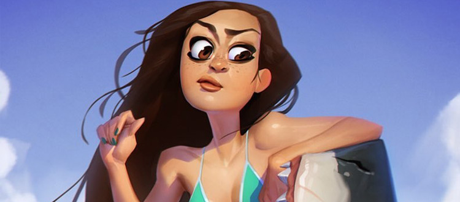

Character design
A character designer(or character artist) creates the entire concept, style, and artwork of a character from scratch. This often includes a deep look into the character’s personality to develop a visual idea of the character’s physical features. Creating an entire character from scratch(human or otherwise) takes a lot of creative energy. That’s why the process of character design is very complex and is often one of the most sought-after careers for aspiring entertainment artists.
